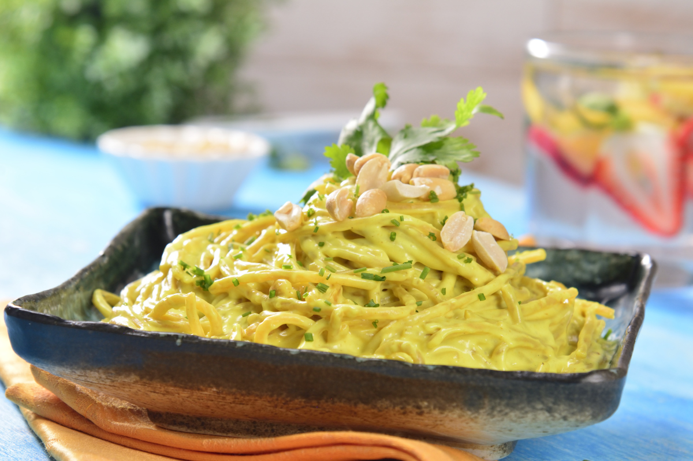

SPAGHUETTI CON SALSA DE CACAHUATE Y AJONJOLÍ
Nutritivo platillo de spaghetti integral, con salsa de leche de coco, cacahuate, ajonjolí y un toque de especiado curry. Esta receta es muy fresca y rica; una opción saludable. Prueba esta deliciosa combinación.
Ingredientes
- 6 tazas de agua
- 1 cucharada de sal
- 1 paquete de spaghetti integral (500 g)
- 1 taza de leche de coco para la salsa
- 1/2 taza de cacahuate tostado, para la salsa
- 2 cucharadas de ajonjolí tostado, para la salsa
- 1 cucharadita de curry en polvo para la salsa
- 1 pizca de sal para la salsa
- 1 pizca de pimienta para la salsa
- 3 cucharadas de aceite de coco
- 1 diente de ajo finamente picado
- 1/4 de taza de cacahuate
- 3 cucharaditas de jengibre finamente picado
- 1 pizca de sal
- 1 pizca de pimienta
- 1 cucharada de cebollín finamente picado, para decorar
- 10 hojas de cilantro fresco, para decorar
Preparacion
-
Cuece el spaghetti en una olla con agua hirviendo y sal, de acuerdo a las instrucciones del paquete. Escurre y reserva.
-
Licúa la leche de coco, el cacahuate, el ajonjolí, el curry en polvo, la sal y pimienta. Reserva.
-
Calienta a fuego medio una sartén mediano agrega el aceite de coco, el ajo, los cacahuates y el jengibre.
-
Incorpora el spaghetti y la salsa y cocina 5 minutos para que reduzca un poco la salsa. Sazona, retira del fuego.
-
Sirve el spaghetti con cebollín picado y hojitas de cilantro fresco. Disfruta